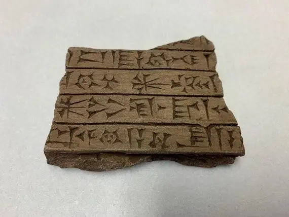

Мары. Месапатамія. 2400 г. да Н. Х., рэпрадукцыя.
Самыя раннія пісьмовыя дакументы дайшлі да нас з Шумера (сучасны паўднёвы Ірак). Шумерская малітоўная таблічка з горада Мары была створана каля 2400 г. да Н. Х. Адным з ранніх матэрыялаў для пісьма была гліна. На гліне пісалі (выціскалі) стылусам значкі, якія называюць клінапісным пісьмом. Клінапіс вынік развіцця піктаграфічнага пісьма (піктаграмы — малюнкавае пісьмо, якое нагадвае іконкі праграм ў смартфоне). Абрахам паходзіў з Ура Халдзейскага, дзе таксама выкарыстоўвалі клінапіснае пісьмо.